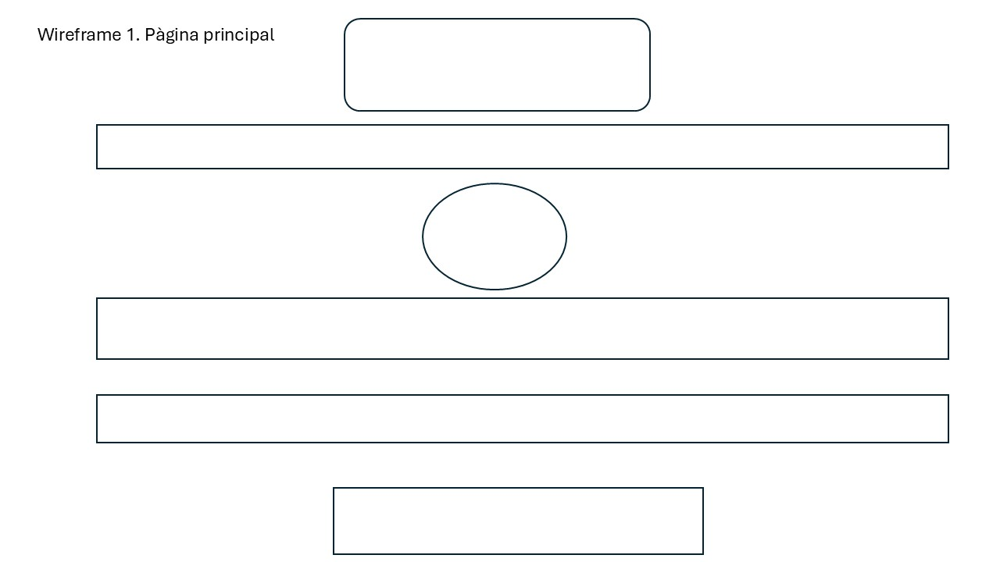
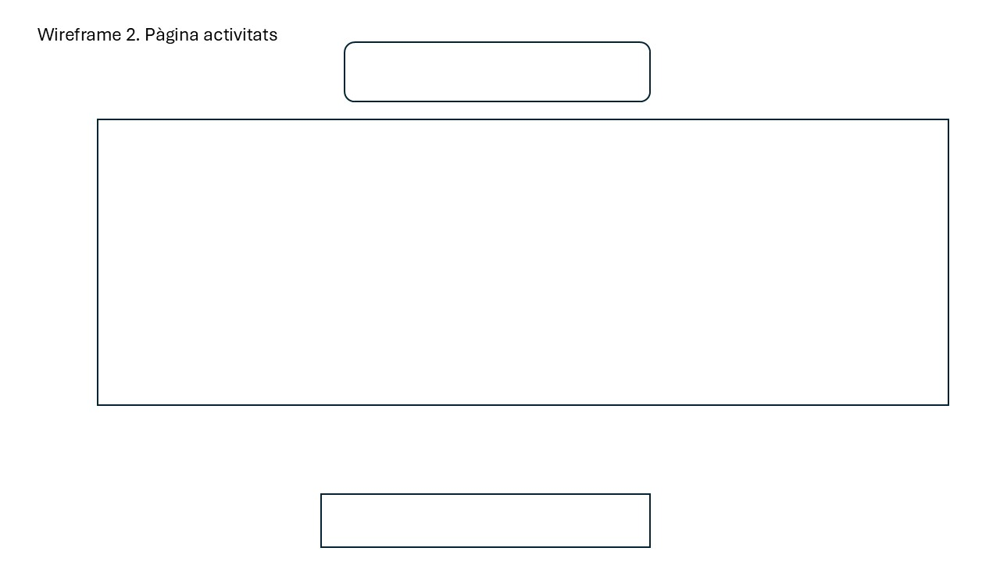
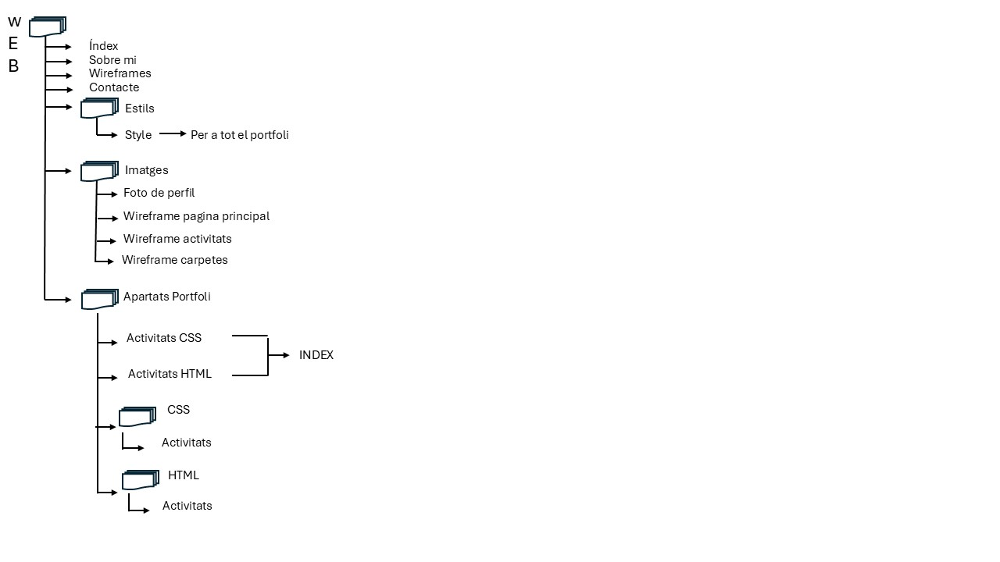

Wireframes del portafoli
En aquesta pàgina es mostren els wireframes creats per planificar l'estructura i el disseny inicial del meu portafoli.
Esborrany del disseny de la pàgina principal

Esborrany del disseny de la pagina d'activitats

Esborrany del disseny de carpetes
